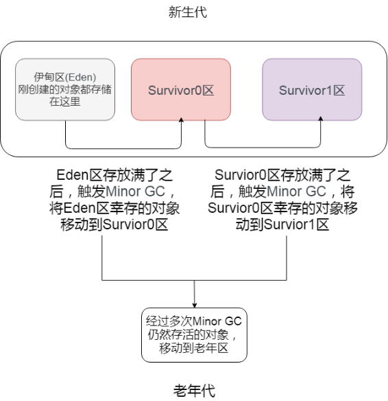

JVM概.md
来自掘金用户：说出你的愿望吧丷
一、JVM的基本介绍¶
JVM 是 Java Virtual Machine 的缩写，它是一个虚构出来的计算机，一种规范。通过在实际的计算机上仿真模拟各类计算机功能实现···
好，其实抛开这么专业的句子不说，就知道JVM其实就类似于一台小电脑运行在windows或者linux这些操作系统环境下即可。它直接和操作系统进行交互，与硬件不直接交互，而操作系统可以帮我们完成和硬件进行交互的工作。

1.1 Java文件是如何被运行的¶
比如我们现在写了一个 HelloWorld.java 好了，那这个 HelloWorld.java 抛开所有东西不谈，那是不是就类似于一个文本文件，只是这个文本文件它写的都是英文，而且有一定的缩进而已。
那我们的 JVM 是不认识文本文件的，所以它需要一个 编译 ，让其成为一个它会读二进制文件的 HelloWorld.class
① 类加载器¶
最顶级的就 BootStrap 随 JVM 内核启动
如果 JVM 想要执行这个 .class 文件，我们需要将其装进一个 类加载器 中，它就像一个搬运工一样，会把所有的 .class 文件全部搬进JVM里面来。
② 方法区¶
方法区 是用于存放类似于元数据信息方面的数据的，比如类信息，常量，静态变量，编译后代码···等
类加载器将 .class 文件搬过来就是先丢到这一块上
③ 堆¶
堆 主要放了一些存储的数据，比如对象实例，数组···等，它和方法区都同属于 线程共享区域 。也就是说它们都是 线程不安全 的
④ 栈¶
栈 这是我们的代码运行空间。我们编写的每一个方法都会放到 栈 里面运行。
我们会听说过 本地方法栈 或者 本地方法接口 这两个名词，不过我们基本不会涉及这两块的内容，它俩底层是使用C来进行工作的，和Java没有太大的关系。
⑤ 程序计数器¶
主要就是完成一个加载工作，类似于一个指针一样的，指向下一行我们需要执行的代码。和栈一样，都是 线程独享 的，就是说每一个线程都会有自己对应的一块区域而不会存在并发和多线程的问题。

小总结¶
- Java文件经过编译后变成 .class 字节码文件
- 字节码文件通过类加载器被搬运到 JVM 虚拟机中
- 虚拟机主要的5大块：方法区，堆都为线程共享区域，有线程安全问题，栈和本地方法栈和计数器都是独享区域，不存在线程安全问题，而 JVM 的调优主要就是围绕堆，栈两大块进行
1.2 简单的代码例子¶
一个简单的学生类
一个main方法

执行main方法的步骤如下:
- 编译好 App.java 后得到 App.class 后，执行 App.class，系统会启动一个 JVM 进程，从 classpath 路径中找到一个名为 App.class 的二进制文件，将 App 的类信息加载到运行时数据区的方法区内，这个过程叫做 App 类的加载
- JVM 找到 App 的主程序入口，执行main方法
- 这个main中的第一条语句为 Student student = new Student("tellUrDream") ，就是让 JVM 创建一个Student对象，但是这个时候方法区中是没有 Student 类的信息的，所以 JVM 马上加载 Student 类，把 Student 类的信息放到方法区中
- 加载完 Student 类后，JVM 在堆中为一个新的 Student 实例分配内存，然后调用构造函数初始化 Student 实例，这个 Student 实例持有 指向方法区中的 Student 类的类型信息 的引用
- 执行student.sayName();时，JVM 根据 student 的引用找到 student 对象，然后根据 student 对象持有的引用定位到方法区中 student 类的类型信息的方法表，获得 sayName() 的字节码地址。
- 执行sayName()
其实也不用管太多，只需要知道对象实例初始化时会去方法区中找类信息，完成后再到栈那里去运行方法。找方法就在方法表中找。
二、类加载器的介绍¶
之前也提到了它是负责加载.class文件的，它们在文件开头会有特定的文件标示，将class文件字节码内容加载到内存中，并将这些内容转换成方法区中的运行时数据结构，并且ClassLoader只负责class文件的加载，而是否能够运行则由 Execution Engine 来决定
2.1 类加载器的流程¶
从类被加载到虚拟机内存中开始，到释放内存总共有7个步骤：加载，验证，准备，解析，初始化，使用，卸载。其中验证，准备，解析三个部分统称为连接
2.1.1 加载¶
- 将class文件加载到内存
- 将静态数据结构转化成方法区中运行时的数据结构
- 在堆中生成一个代表这个类的 java.lang.Class对象作为数据访问的入口
2.1.2 链接¶
- 验证：确保加载的类符合 JVM 规范和安全，保证被校验类的方法在运行时不会做出危害虚拟机的事件，其实就是一个安全检查
- 准备：为static变量在方法区中分配内存空间，设置变量的初始值，例如 static int a = 3 （注意：准备阶段只设置类中的静态变量（方法区中），不包括实例变量（堆内存中），实例变量是对象初始化时赋值的）
- 解析：虚拟机将常量池内的符号引用替换为直接引用的过程（符号引用比如我现在import java.util.ArrayList这就算符号引用，直接引用就是指针或者对象地址，注意引用对象一定是在内存进行）
2.1.3 初始化¶
初始化其实就是执行类构造器方法的<clinit>()的过程，而且要保证执行前父类的<clinit>()方法执行完毕。这个方法由编译器收集，顺序执行所有类变量（static修饰的成员变量）显式初始化和静态代码块中语句。此时准备阶段时的那个 static int a 由默认初始化的0变成了显式初始化的3. 由于执行顺序缘故，初始化阶段类变量如果在静态代码块中又进行了更改，会覆盖类变量的显式初始化，最终值会为静态代码块中的赋值。
注意：字节码文件中初始化方法有两种，非静态资源初始化的
<init>和静态资源初始化的<clinit>，类构造器方法<clinit>()不同于类的构造器，这些方法都是字节码文件中只能给JVM识别的特殊方法。
2.1.4 卸载¶
GC将无用对象从内存中卸载
2.2 类加载器的加载顺序¶
加载一个Class类的顺序也是有优先级的，类加载器从最底层开始往上的顺序是这样的
- BootStrap ClassLoader：rt.jar
- Extension ClassLoader: 加载扩展的jar包
- App ClassLoader：指定的classpath下面的jar包
- Custom ClassLoader：自定义的类加载器
2.3 双亲委派机制¶
parents delegate
并不 "双" 不是一个夫 一个母
强调的是 上下优先
就是先走父类加载器 如果不行再尝试子类
BootStrap ClassLoader
当一个类收到了加载请求时，它是不会先自己去尝试加载的，而是委派给父类去完成，比如我现在要new一个Person，这个Person是我们自定义的类，如果我们要加载它，就会先委派App ClassLoader，只有当父类加载器都反馈自己无法完成这个请求（也就是父类加载器都没有找到加载所需的Class）时，子类加载器才会自行尝试加载
这样做的好处是，加载位于rt.jar包中的类时不管是哪个加载器加载，最终都会委托到BootStrap ClassLoader进行加载，这样保证了使用不同的类加载器得到的都是同一个结果。
其实这个也是一个隔离的作用，避免了我们的代码影响了JDK的代码，比如我现在要来一个
1 2 3 | |
这种时候，我们的代码肯定会报错，因为在加载的时候其实是找到了rt.jar中的String.class，然后发现这也没有main方法
三、运行时数据区¶
3.1 本地方法栈和程序计数器¶
比如说我们现在点开Thread类的源码，会看到它的start0方法带有一个native关键字修饰，而且不存在方法体，这种用native修饰的方法就是本地方法，这是使用C来实现的，然后一般这些方法都会放到一个叫做本地方法栈的区域。
程序计数器其实就是一个指针，它指向了我们程序中下一句需要执行的指令，它也是内存区域中唯一一个不会出现OutOfMemoryError的区域，而且占用内存空间小到基本可以忽略不计。这个内存仅代表当前线程所执行的字节码的行号指示器，字节码解析器通过改变这个计数器的值选取下一条需要执行的字节码指令。
如果执行的是native方法，那这个指针就不工作了。
3.2 方法区¶
方法区主要的作用是存放类的元数据信息，常量和静态变量···等。当它存储的信息过大时，会在无法满足内存分配时报错。
3.3 虚拟机栈和虚拟机堆¶
一句话便是：栈管运行，堆管存储。则虚拟机栈负责运行代码，而虚拟机堆负责存储数据。
3.3.1 虚拟机栈的概念¶
它是Java方法执行的内存模型。里面会对局部变量，动态链表，方法出口，栈的操作（入栈和出栈）进行存储，且线程独享。同时如果我们听到局部变量表，那也是在说虚拟机栈
1 2 3 4 5 6 7 | |
3.3.2 虚拟机栈存在的异常¶
如果线程请求的栈的深度大于虚拟机栈的最大深度，就会报 StackOverflowError （这种错误经常出现在递归中）。Java虚拟机也可以动态扩展，但随着扩展会不断地申请内存，当无法申请足够内存时就会报错 OutOfMemoryError。
3.3.3 虚拟机栈的生命周期¶
对于栈来说，不存在垃圾回收。只要程序运行结束，栈的空间自然就会释放了。栈的生命周期和所处的线程是一致的。
这里补充一句：8种基本类型的变量+对象的引用变量+实例方法都是在栈里面分配内存。
3.3.4 虚拟机栈的执行¶
我们经常说的栈帧数据，说白了在JVM中叫栈帧，放到Java中其实就是方法，它也是存放在栈中的。
栈中的数据都是以栈帧的格式存在，它是一个关于方法和运行期数据的数据集。比如我们执行一个方法a，就会对应产生一个栈帧A1，然后A1会被压入栈中。同理方法b会有一个B1，方法c会有一个C1，等到这个线程执行完毕后，栈会先弹出C1，后B1,A1。它是一个先进后出，后进先出原则。
3.3.5 局部变量的复用¶
局部变量表用于存放方法参数和方法内部所定义的局部变量。它的容量是以Slot为最小单位，一个slot可以存放32位以内的数据类型。
虚拟机通过索引定位的方式使用局部变量表，范围为[0,局部变量表的slot的数量]。方法中的参数就会按一定顺序排列在这个局部变量表中，至于怎么排的我们可以先不关心。而为了节省栈帧空间，这些slot是可以复用的，当方法执行位置超过了某个变量，那么这个变量的slot可以被其它变量复用。当然如果需要复用，那我们的垃圾回收自然就不会去动这些内存。
3.3.6 虚拟机堆的概念¶
JVM内存会划分为堆内存和非堆内存，堆内存中也会划分为年轻代和老年代，而非堆内存则为永久代。年轻代又会分为Eden和Survivor区。Survivor也会分为FromPlace和ToPlace，toPlace的survivor区域是空的。Eden，FromPlace和ToPlace的默认占比为 8:1:1。当然这个东西其实也可以通过一个 -XX:+UsePSAdaptiveSurvivorSizePolicy 参数来根据生成对象的速率动态调整
堆内存中存放的是对象，垃圾收集就是收集这些对象然后交给GC算法进行回收。非堆内存其实我们已经说过了，就是方法区。在1.8中已经移除永久代，替代品是一个元空间(MetaSpace)，最大区别是metaSpace是不存在于JVM中的，它使用的是本地内存。并有两个参数
1 2 | |
移除的原因可以大致了解一下：融合HotSpot JVM和JRockit VM而做出的改变，因为JRockit是没有永久代的，不过这也间接性地解决了永久代的OOM问题。
3.3.7 Eden年轻代的介绍¶
当我们new一个对象后，会先放到Eden划分出来的一块作为存储空间的内存，但是我们知道对堆内存是线程共享的，所以有可能会出现两个对象共用一个内存的情况。这里JVM的处理是每个线程都会预先申请好一块连续的内存空间并规定了对象存放的位置，而如果空间不足会再申请多块内存空间。这个操作我们会称作TLAB，有兴趣可以了解一下。
当Eden空间满了之后，会触发一个叫做Minor GC（就是一个发生在年轻代的GC）的操作，存活下来的对象移动到Survivor0区。Survivor0区满后触发 Minor GC，就会将存活对象移动到Survivor1区，此时还会把from和to两个指针交换，这样保证了一段时间内总有一个survivor区为空且to所指向的survivor区为空。经过多次的 Minor GC后仍然存活的对象（这里的存活判断是15次，对应到虚拟机参数为 -XX:MaxTenuringThreshold 。为什么是15，因为HotSpot会在对象投中的标记字段里记录年龄，分配到的空间仅有4位，所以最多只能记录到15）会移动到老年代。老年代是存储长期存活的对象的，占满时就会触发我们最常听说的Full GC，期间会停止所有线程等待GC的完成。所以对于响应要求高的应用应该尽量去减少发生Full GC从而避免响应超时的问题。
而且当老年区执行了full gc之后仍然无法进行对象保存的操作，就会产生OOM，这时候就是虚拟机中的堆内存不足，原因可能会是堆内存设置的大小过小，这个可以通过参数-Xms、-Xmx来调整。也可能是代码中创建的对象大且多，而且它们一直在被引用从而长时间垃圾收集无法收集它们。

补充说明：关于-XX:TargetSurvivorRatio参数的问题。其实也不一定是要满足-XX:MaxTenuringThreshold才移动到老年代。可以举个例子：如对象年龄5的占30%，年龄6的占36%，年龄7的占34%，加入某个年龄段（如例子中的年龄6）后，总占用超过Survivor空间*TargetSurvivorRatio的时候，从该年龄段开始及大于的年龄对象就要进入老年代（即例子中的年龄6对象，就是年龄6和年龄7晋升到老年代），这时候无需等到MaxTenuringThreshold中要求的15
3.3.8 如何判断一个对象需要被干掉¶

图中程序计数器、虚拟机栈、本地方法栈，3个区域随着线程的生存而生存的。内存分配和回收都是确定的。随着线程的结束内存自然就被回收了，因此不需要考虑垃圾回收的问题。而Java堆和方法区则不一样，各线程共享，内存的分配和回收都是动态的。因此垃圾收集器所关注的都是堆和方法这部分内存。
在进行回收前就要判断哪些对象还存活，哪些已经死去。下面介绍两个基础的计算方法
1.引用计数器计算：给对象添加一个引用计数器，每次引用这个对象时计数器加一，引用失效时减一，计数器等于0时就是不会再次使用的。不过这个方法有一种情况就是出现对象的循环引用时GC没法回收。
2.可达性分析计算：这是一种类似于二叉树的实现，将一系列的GC ROOTS作为起始的存活对象集，从这个节点往下搜索，搜索所走过的路径成为引用链，把能被该集合引用到的对象加入到集合中。搜索当一个对象到GC Roots没有使用任何引用链时，则说明该对象是不可用的。主流的商用程序语言，例如Java，C#等都是靠这招去判定对象是否存活的。
（了解一下即可）在Java语言汇总能作为GC Roots的对象分为以下几种：
- 虚拟机栈（栈帧中的本地方法表）中引用的对象（局部变量）
- 方法区中静态变量所引用的对象（静态变量）
- 方法区中常量引用的对象
- 本地方法栈（即native修饰的方法）中JNI引用的对象（JNI是Java虚拟机调用对应的C函数的方式，通过JNI函数也可以创建新的Java对象。且JNI对于对象的局部引用或者全局引用都会把它们指向的对象都标记为不可回收）
- 已启动的且未终止的Java线程
这种方法的优点是能够解决循环引用的问题，可它的实现需要耗费大量资源和时间，也需要GC（它的分析过程引用关系不能发生变化，所以需要停止所有进程）
3.3.9 如何宣告一个对象的真正死亡¶
首先必须要提到的是一个名叫 finalize() 的方法
finalize()是Object类的一个方法、一个对象的finalize()方法只会被系统自动调用一次，经过finalize()方法逃脱死亡的对象，第二次不会再调用。
补充一句：并不提倡在程序中调用finalize()来进行自救。建议忘掉Java程序中该方法的存在。因为它执行的时间不确定，甚至是否被执行也不确定（Java程序的不正常退出），而且运行代价高昂，无法保证各个对象的调用顺序（甚至有不同线程中调用）。在Java9中已经被标记为 deprecated ，且java.lang.ref.Cleaner（也就是强、软、弱、幻象引用的那一套）中已经逐步替换掉它，会比finalize来的更加的轻量及可靠。
判断一个对象的死亡至少需要两次标记
-
如果对象进行可达性分析之后没发现与GC Roots相连的引用链，那它将会第一次标记并且进行一次筛选。判断的条件是决定这个对象是否有必要执行finalize()方法。如果对象有必要执行finalize()方法，则被放入F-Queue队列中。 就优先队列
-
GC对F-Queue队列中的对象进行二次标记。如果对象在finalize()方法中重新与引用链上的任何一个对象建立了关联，那么二次标记时则会将它移出“即将回收”集合。如果此时对象还没成功逃脱，那么只能被回收了。
如果确定对象已经死亡，我们又该如何回收这些垃圾呢
3.4 垃圾回收算法¶
不会非常详细的展开，常用的有标记清除，复制，标记整理和分代收集算法
3.4.1 标记清除算法¶
标记清除算法就是分为“标记”和“清除”两个阶段。标记出所有需要回收的对象，标记结束后统一回收。这个套路很简单，也存在不足，后续的算法都是根据这个基础来加以改进的。
其实它就是把已死亡的对象标记为空闲内存，然后记录在一个空闲列表中，当我们需要new一个对象时，内存管理模块会从空闲列表中寻找空闲的内存来分给新的对象。
不足的方面就是标记和清除的效率比较低下。且这种做法会让内存中的碎片非常多。这个导致了如果我们需要使用到较大的内存块时，无法分配到足够的连续内存。比如下图

此时可使用的内存块都是零零散散的，导致了刚刚提到的大内存对象问题
3.4.2 复制算法¶
为了解决效率问题，复制算法就出现了。它将可用内存按容量划分成两等分，每次只使用其中的一块。和survivor一样也是用from和to两个指针这样的玩法。fromPlace存满了，就把存活的对象copy到另一块toPlace上，然后交换指针的内容。这样就解决了碎片的问题。
这个算法的代价就是把内存缩水了，这样堆内存的使用效率就会变得十分低下了

不过它们分配的时候也不是按照1:1这样进行分配的，就类似于Eden和Survivor也不是等价分配是一个道理。
3.4.3 标记整理算法¶
复制算法在对象存活率高的时候会有一定的效率问题，标记过程仍然与“标记-清除”算法一样，但后续步骤不是直接对可回收对象进行清理，而是让所有存活的对象都向一端移动，然后直接清理掉边界以外的内存

3.4.4 分代收集算法¶
这种算法并没有什么新的思想，只是根据对象存活周期的不同将内存划分为几块。一般是把Java堆分为新生代和老年代，这样就可以根据各个年代的特点采用最适当的收集算法。在新生代中，每次垃圾收集时都发现有大批对象死去，只有少量存活，那就选用复制算法，只需要付出少量存活对象的复制成本就可以完成收集。而老年代中因为对象存活率高、没有额外空间对它进行分配担保，就必须使用“标记-清理”或者“标记-整理”算法来进行回收。
说白了就是八仙过海各显神通，具体问题具体分析了而已。
3.5 （了解）各种各样的垃圾回收器¶
HotSpot VM中的垃圾回收器，以及适用场景

到jdk8为止，默认的垃圾收集器是Parallel Scavenge 和 Parallel Old
从jdk9开始，G1收集器成为默认的垃圾收集器 目前来看，G1回收器停顿时间最短而且没有明显缺点，非常适合Web应用。在jdk8中测试Web应用，堆内存6G，新生代4.5G的情况下，Parallel Scavenge 回收新生代停顿长达1.5秒。G1回收器回收同样大小的新生代只停顿0.2秒。
3.6 （了解）JVM的常用参数¶
JVM的参数非常之多，这里只列举比较重要的几个，通过各种各样的搜索引擎也可以得知这些信息。
| 参数名称 | 含义 | 默认值 | 说明 |
|---|---|---|---|
| -Xms | 初始堆大小 | 物理内存的1/64(<1GB) | 默认(MinHeapFreeRatio参数可以调整)空余堆内存小于40%时，JVM就会增大堆直到-Xmx的最大限制. |
| -Xmx | 最大堆大小 | 物理内存的¼(<1GB) | 默认(MaxHeapFreeRatio参数可以调整)空余堆内存大于70%时，JVM会减少堆直到 -Xms的最小限制 |
| -Xmn | 年轻代大小(1.4or lator) | 注意：此处的大小是（eden+ 2 survivor space).与jmap -heap中显示的New gen是不同的。整个堆大小=年轻代大小 + 老年代大小 + 持久代（永久代）大小.增大年轻代后,将会减小年老代大小.此值对系统性能影响较大,Sun官方推荐配置为整个堆的⅜ | |
| -XX:NewSize | 设置年轻代大小(for 1.3/1.4) | ||
| -XX:MaxNewSize | 年轻代最大值(for 1.3/1.4) | ||
| -XX:PermSize | 设置持久代(perm gen)初始值 | 物理内存的1/64 | |
| -XX:MaxPermSize | 设置持久代最大值 | 物理内存的¼ | |
| -Xss | 每个线程的堆栈大小 | JDK5.0以后每个线程堆栈大小为1M,以前每个线程堆栈大小为256K.根据应用的线程所需内存大小进行 调整.在相同物理内存下,减小这个值能生成更多的线程.但是操作系统对一个进程内的线程数还是有限制的,不能无限生成,经验值在3000~5000左右一般小的应用， 如果栈不是很深， 应该是128k够用的 大的应用建议使用256k。这个选项对性能影响比较大，需要严格的测试。（校长）和threadstacksize选项解释很类似,官方文档似乎没有解释,在论坛中有这样一句话:-Xss is translated in a VM flag named ThreadStackSize”一般设置这个值就可以了 | |
| -XX:NewRatio | 年轻代(包括Eden和两个Survivor区)与年老代的比值(除去持久代) | -XX:NewRatio=4表示年轻代与年老代所占比值为1:4,年轻代占整个堆栈的⅕Xms=Xmx并且设置了Xmn的情况下，该参数不需要进行设置。 | |
| -XX:SurvivorRatio | Eden区与Survivor区的大小比值 | 设置为8,则两个Survivor区与一个Eden区的比值为2:8,一个Survivor区占整个年轻代的1/10 | |
| -XX:+DisableExplicitGC | 关闭System.gc() | 这个参数需要严格的测试 | |
| -XX:PretenureSizeThreshold | 对象超过多大是直接在旧生代分配 | 0 | 单位字节 新生代采用Parallel ScavengeGC时无效另一种直接在旧生代分配的情况是大的数组对象,且数组中无外部引用对象. |
| -XX:ParallelGCThreads | 并行收集器的线程数 | 此值最好配置与处理器数目相等 同样适用于CMS | |
| -XX:MaxGCPauseMillis | 每次年轻代垃圾回收的最长时间(最大暂停时间) | 如果无法满足此时间,JVM会自动调整年轻代大小,以满足此值. |
其实还有一些打印及CMS方面的参数，这里就不以一一列举了
四、关于JVM调优的一些方面¶
根据刚刚涉及的jvm的知识点，我们可以尝试对JVM进行调优，主要就是堆内存那块
所有线程共享数据区大小 = 新生代大小 + 年老代大小 + 持久代大小。
持久代一般固定大小为64m。所以java堆中增大年轻代后，将会减小年老代大小（因为老年代的清理是使用fullgc，所以老年代过小的话反而是会增多fullgc的）。此值对系统性能影响较大，Sun官方推荐配置为java堆的⅜。
4.1 调整最大堆内存和最小堆内存¶
-Xmx –Xms：指定java堆最大值（默认值是物理内存的¼(<1GB)）和初始java堆最小值（默认值是物理内存的1/64(<1GB))
默认(MinHeapFreeRatio参数可以调整)空余堆内存小于40%时，JVM就会增大堆直到-Xmx的最大限制.，默认(MaxHeapFreeRatio参数可以调整)空余堆内存大于70%时，JVM会减少堆直到 -Xms的最小限制。简单点来说，你不停地往堆内存里面丢数据，等它剩余大小小于40%了，JVM就会动态申请内存空间不过会小于-Xmx，如果剩余大小大于70%，又会动态缩小不过不会小于–Xms。就这么简单
开发过程中，通常会将 -Xms 与 -Xmx两个参数配置成相同的值，其目的是为了能够在java垃圾回收机制清理完堆区后不需要重新分隔计算堆区的大小而浪费资源。
我们执行下面的代码
1 2 3 | |
注意：此处设置的是Java堆大小，也就是新生代大小 + 老年代大小

设置一个VM options的参数
1 | |
再次启动main方法
这里GC弹出了一个Allocation Failure分配失败，这个事情发生在PSYoungGen，也就是年轻代中
这时候申请到的内存为18M，空闲内存为4.214195251464844M
我们此时创建一个字节数组看看，执行下面的代码
1 2 3 4 5 | |

此时free memory就又缩水了，不过total memory是没有变化的。Java会尽可能将total mem的值维持在最小堆内存大小
1 2 3 4 5 | |

这时候我们创建了一个10M的字节数据，这时候最小堆内存是顶不住的。我们会发现现在的total memory已经变成了15M，这就是已经申请了一次内存的结果。
此时我们再跑一下这个代码
1 2 3 4 | |
此时我们手动执行了一次fullgc，此时total memory的内存空间又变回5.5M了，此时又是把申请的内存释放掉的结果。
4.2 调整新生代和老年代的比值¶
-XX:NewRatio --- 新生代（eden+2*Survivor）和老年代（不包含永久区）的比值
例如：-XX:NewRatio=4，表示新生代:老年代=1:4，即新生代占整个堆的⅕。在Xms=Xmx并且设置了Xmn的情况下，该参数不需要进行设置。
4.3 调整Survivor区和Eden区的比值¶
-XX:SurvivorRatio（幸存代）--- 设置两个Survivor区和eden的比值
例如：8，表示两个Survivor:eden=2:8，即一个Survivor占年轻代的1/10
4.4 设置年轻代和老年代的大小¶
-XX:NewSize --- 设置年轻代大小
-XX:MaxNewSize --- 设置年轻代最大值
可以通过设置不同参数来测试不同的情况，反正最优解当然就是官方的Eden和Survivor的占比为8:1:1，然后在刚刚介绍这些参数的时候都已经附带了一些说明，感兴趣的也可以看看。反正最大堆内存和最小堆内存如果数值不同会导致多次的gc，需要注意。
4.5 小总结¶
根据实际事情调整新生代和幸存代的大小，官方推荐新生代占java堆的⅜，幸存代占新生代的1/10
在OOM时，记得Dump出堆，确保可以排查现场问题，通过下面命令你可以输出一个.dump文件，这个文件可以使用VisualVM或者Java自带的Java VisualVM工具。
1 | |
一般我们也可以通过编写脚本的方式来让OOM出现时给我们报个信，可以通过发送邮件或者重启程序等来解决。
4.6 永久区的设置¶
1 | |
初始空间（默认为物理内存的1/64）和最大空间（默认为物理内存的¼）。也就是说，jvm启动时，永久区一开始就占用了PermSize大小的空间，如果空间还不够，可以继续扩展，但是不能超过MaxPermSize，否则会OOM。
tips：如果堆空间没有用完也抛出了OOM，有可能是永久区导致的。堆空间实际占用非常少，但是永久区溢出 一样抛出OOM。
4.7 JVM的栈参数调优¶
4.7.1 调整每个线程栈空间的大小¶
可以通过-Xss：调整每个线程栈空间的大小
JDK5.0以后每个线程堆栈大小为1M，以前每个线程堆栈大小为256K。在相同物理内存下,减小这个值能生成更多的线程。但是操作系统对一个进程内的线程数还是有限制的，不能无限生成，经验值在3000~5000左右
4.7.2 设置线程栈的大小¶
1 2 | |
这些参数都是可以通过自己编写程序去简单测试的，这里碍于篇幅问题就不再提供demo了
4.8 (可以直接跳过了)JVM其他参数介绍¶
形形色色的参数很多，就不会说把所有都扯个遍了，因为大家其实也不会说一定要去深究到底。
4.8.1 设置内存页的大小¶
1 2 | |
4.8.2 设置原始类型的快速优化¶
1 2 | |
4.8.3 设置关闭手动GC¶
1 2 | |
4.8.4 设置垃圾最大年龄¶
1 2 3 4 5 | |
4.8.5 加快编译速度¶
1 | |
加快编译速度
4.8.6 改善锁机制性能¶
1 | |
4.8.7 禁用垃圾回收¶
1 | |
4.8.8 设置堆空间存活时间¶
1 2 | |
4.8.9 设置对象直接分配在老年代¶
1 2 | |
4.8.10 设置TLAB占eden区的比例¶
1 2 | |
4.8.11设置是否优先YGC¶
1 2 | |
Finally¶
真的扯了很久这东西，参考了多方的资料，有极客时间的《深入拆解虚拟机》和《Java核心技术面试精讲》，也有百度，也有自己在学习的一些线上课程的总结。希望对你有所帮助，谢谢。